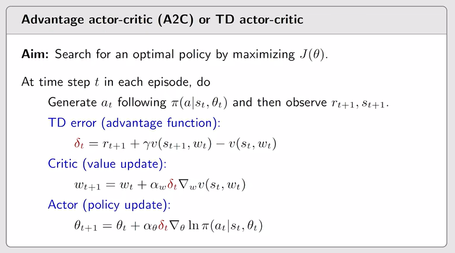
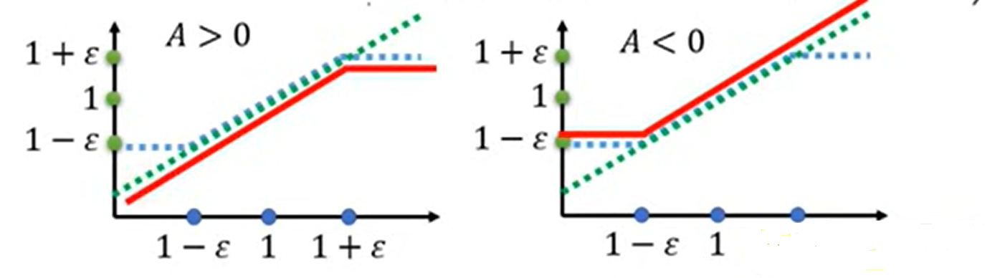
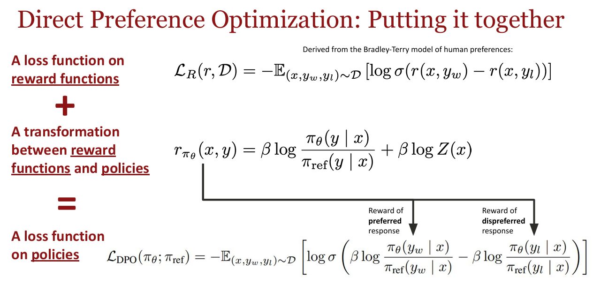

本章内容参考：【【强化学习的数学原理】课程：从零开始到透彻理解（完结）】
Policy Function Approximation
之前我们学了值函数近似，现在继续来学策略函数近似。本质上都是一回事——用神经网络去拟合一个连续函数，替代之前采用的策略表。
令 π(a∣s,θ) 在状态 s 下选择动作 a 的概率，其中 θ 为函数参数。
表格形式与函数形式会有哪些不同呢？
-
首先，在如何定义最优策略上：表格形式的最优策略就是对应策略下的任一 state value 大于等于其他策略下的 state value；而函数形式需要用一个标量作为 metrics，最大化这个目标度量。
-
第二，如何检索某状态下的策略：表格形式直接查表就好，现在还要把状态丢进模型里，算一下才能知道。
-
第三：如何更新策略：表格形式下直接改表格中的元素就好了，而函数形式需要借助修改参数间接更新策略。
但这样也有好处，更改策略具有一定泛化性。之前改状态-动作对的概率只能一个个改，现在为了更新某个状态下的某个动作去修改参数时，可能也会连带着影响到其他相关的状态-动作对。
1. 如何定义最优策略
第一种 metric 称为平均状态价值，or average value simply.
这种 metric 被定义为：vˉπ=∑s∈Sd(s)vπ(s)，其中 d(s) 表示状态出现的概率分布；亦可表示为 vˉπ=ES∼d[vπ(S)]，尝试理解一下；还可以表示为矩阵的形式：vˉπ=dTvπ，在求解梯度时会有用。
当 d(s) 与选取策略无关时，所以在求梯度的时候可以直接拎出来。至于如何选择初始的 d(s) 呢？最简单的就是均匀分布，每个状态出现概率一样；或者对于某些游戏来说，选择某种初始状态 s0 可以保证价值最大，那我们初始就令 d(s0)=1，其他状态 d(s′)=0 .
当 d(s) 与选取策略有关时，可以直接采用 d(s) 的静态分布，即：
dTPπ=dT
其中，Pπ 为策略 π 下的转移概率矩阵。采取这种 d(s) 可以使出现频率大的状态多分配一点权重。
第二种 metric 称为平均单步奖励，or average reward simply.
rˉπ≐s∈S∑dπ(s)rπ(s)=E[rπ(S)]
where S∼dπ. Here,
rπ(s)≐a∈A∑π(a∣s)r(s,a)
或者可以表示成另一种等价定义。
- 假设 agent 遵从策略 π，产生轨迹的 reward 为 (Rt+1,Rt+2,…).
- 那么该轨迹的平均奖励表示为：
=n→∞limn1E[Rt+1+Rt+2+⋯+Rt+n∣St=s0]n→∞limn1E[k=1∑nRt+k∣St=s0]=n→∞limn1E[k=1∑nRt+k]
最后一个等式告诉我们：当你已经跑了足够远，那么你从哪里开始就已经不重要了。
以上这两个 metric 都是受 π —— 也就是参数 θ 影响的，因此思路就是找到最优的参数，使这两个 metric 最大化。
这两个 metric 本质上是等价的。
2. 如何计算梯度？
Summary of the results about the gradients:
∇θJ(θ)=s∈S∑η(s)a∈A∑∇θπ(a∣s,θ)qπ(s,a)
where
- J(θ) can be vˉπ,rˉπ, or vˉπ0.
- η 是状态或者权重的某种分布.
我们针对上式做一些简单的推导。由 ∇θlnπ(a∣s,θ)=π(a∣s,θ)∇θπ(a∣s,θ) 可知：
∇θJ=s∑d(s)a∑∇θπ(a∣s,θ)qπ(s,a)=s∑d(s)a∑π(a∣s,θ)∇θlnπ(a∣s,θ)qπ(s,a)=ES∼d[a∑π(a∣S,θ)∇θlnπ(a∣S,θ)qπ(S,a)]=ES∼d,A∼π[∇θlnπ(A∣S,θ)qπ(S,A)]
这样整理之后，就可以用采样的方式（随机梯度下降）把期望给摘掉。由于 ln 函数存在，需要对 π 做归一化 (softmax)
其中 S∼d 不太需要在意，因为 d 代表长期分布下的数据，一般情况下我们能有数据就不错了；A∼π(A∣S,θ) 代表这个方法是根据 π 得到的，应该是 on-policy 方法。
3. REINFORCE
刚才我们已经把目标函数转化为：
θt+1=θt+α∇θlnπ(at∣st,θt)qπ(st,at)
然而 qπ 同样是未知的，需要进行采样近似。我们可以采用基于蒙特卡洛的方法进行采样：从 (s,a) 出发得到一个轨迹，计算这个轨迹的 return qt(s,a). 用得到的 qt 代替 qπ.
我们管这种方法叫做 REINFORCE.
其实 REINFORCE 方法还暗含了一种 “探索与利用” 的 trade-off 在里面。由于：
∇θlnπ(at∣st,θt)=π(at∣st,θt)∇θπ(at∣st,θt)
改写算法可得：
θt+1=θt+α∇θlnπ(at∣st,θt)qt(st,at)=θt+αβt(π(at∣st,θt)qt(st,at))∇θπ(at∣st,θt)
我们得到了另一个柿子：
θt+1=θt+αβt∇θπ(at∣st,θt)
这个式子就可以看做是在梯度更新 θ，使其朝着优化 π(at∣st) 的方向前进。
其中对 βt 进行分析：
- βt 是正比于 qt(st,at) 的，因此 qt(at∣st) 值越大，算法倾向于给 at 分配更大的值。
- βt 是反比于 π(at∣st) 的，因此 π(at∣st) 值越小，算法倾向于给 at 分配更大的值。
第一步做到了 RL 中的 利用，而第二步做到了 RL 中的 探索。
Actor-Critic
上一章我们已经把目标函数转化为：
θt+1=θt+α∇θlnπ(at∣st,θt)qπ(st,at)
当我们采用时序差分方法 (TD) 进行采样 qπ （拟合一个值函数来指导策略进行学习）时，这种方法就被称作 Actor-Critic.
9.5 节提到 REINFORCE 通过蒙特卡洛采样的方法对策略梯度的估计是无偏的，但是方差非常大。我们可以用形式(3)引入基线函数（baseline function）b(st) 来减小方差。
∇θJ(θ)=ES∼d,A∼π[∇θlnπ(A∣S,θ)(qπ(S,A)−b(S))]
可以验证，减去一个仅与 S 有关的函数 b(S) 不会影响该优化目标，反而还能减小方差。 这样我们采样的时候，就可以减少采样误差。 一般我们令 b(S)=EA∼π[q(s,A)]=vπ(s),
进一步地，我们还可以用 TD Error 对 qπ 进行近似：
E[qπ(st,at)−vπ(st)]=E[R+γvπ(st+1)−vπ(st)]
Critic 价值网络可以采取时序差分残差的学习方式，定义如下价值函数的损失函数：
L(ω)=21(r+γVw(st+1)−Vw(st))2
算法如下：

Off-Policy 的 Actor-Critic
之前的课我们可知，由于目标函数 ∇θJ(θ)=ES∼d,A∼π[∗] 中动作采样是要服从策略 π 的，是我们的 Behavior Policy；同时， π 也是我们要更新的 Target Policy. 因此这些算法都是 On-Policy 的。
如果想将策略梯度算法转换成 Off-Policy，去复用之前得到的经验，也是可以的。只需要用一种 Importance Sampling 即可。
假设我们在分布 p1 下采了一些样本 {xi}，用以估计 EX∼p0[X]，我们就需要做一些权重的调整。
EX∼p0[X]=x∑p0(x)x=x∑p1(x)p1(x)p0(x)=EX∼p1[f(X)]
这样，我们就可以用 p1 分布下的采样 EX∼p1[f(X)] 来估计 EX∼p0[X] 了。其中 f(x) 本质上就是做了一个加权平均，分布 p1 是已知的，p0（其实就是 π）是可以被计算得到的。
这样就得到了 Off-policy 下的策略梯度定理：
∇θJ(θ)=ES∼ρ,A∼β[β(A∣S)π(A∣S,θ)∇θlnπ(A∣S,θ)qπ(S,A)]=ES∼ρ,A∼β[β(A∣S,θ′)∇π(A∣S,θ)qπ(S,A)]
其中 β 是 behavior policy，ρ 是状态分布。这个 off-policy 还是挺好理解的，但是这两个策略 π 和 β 不能相差太多，否则效果也会不好，因此就引入了 PPO.
PPO
我们引入 KL 散度，限制 π 和 β 之间的差异，得到式子：
JPPOβ(θ)where Jβ(θ)=Jβ(θ)−βKL(θ,θ′)=E(st,at)∼β[pβ(at∣st)pπ(at∣st)Aβ(st,at)]
实际上，“两个策略 π 和 β 不能相差太多” 并不是指参数层面差太多，而是这两个策略导致的行为分布应该是差不多的（即在同一个 state 下，计算出 action 对应的分布，计算这两个之间的 KL 散度）。
PPO-截断
PPO 的另一种形式 PPO-截断（PPO-Clip）更加直接，它在目标函数中进行限制，
以保证新参数和旧参数所得到的策略差距不会太大，即：
argθmaxE(s,a)∼θk[min(πθk(a∣s)πθ(a∣s)Aπθk(s,a),clip(πθk(a∣s)πθ(a∣s),1−ϵ,1+ϵ)Aπθk(s,a))]
其中 clip(x,l,r):=max(min(x,r),l) ，即把 x 限制在 [l,r] 内。上式中 ϵ 是一个
超参数，表示进行截断（clip）的范围。
这个公式非常不易读，因此可以结合图像理解，令横轴表示 πθk(a∣s)πθ(a∣s) ：
- 当 A>0 时，即该 action 的价值为正，则将鼓励策略增加选择该 action 的几率；但是策略的比值应该小于 1+ϵ （控制策略之间的差距），超过了则停止鼓励；
- 当 A<0 时，则该 action 的价值为负，则将鼓励策略降低选择该 action 的几率；但是策略的比值应该大于 1−ϵ （控制策略之间的差距），越界了则停止鼓励；
这样可以控制两个策略差距不会过大，和之前的版本差不多，但更易于实现。

DPO
1. 为什么选择相对奖励偏好，而非绝对的奖励打分？
-
人与人在分配绝对奖励方面没有校准，差别较大；
-
相较之下，在两个回答中选择偏好的回答会容易得多。
2. 如何用训练一个奖励模型？
先从参考模型中生成一批样本：D={xi,ywi,yli} .
构建 Bradley-Terry Model 将偏好对与奖励联系起来：
p(yw≻yl∣x)=σ(r(x,yw)−r(x,yl))
通过最小化负对数似然损失，训练奖励模型：
LR(ϕ,D)=−E(x,yw,yl)∼D[logσ(rϕ(x,yw)−rϕ(x,yl))]
3. RM有了，如何学习策略？
假设奖励模型 rϕ 有了，我们要继续训练策略模型 πθ 以实现更高的价值，从策略中采样 y，得到第一版目标函数：
πθmaxEx∼D,y∼πθ(y∣x)[rϕ(x,y)]
然而，一昧按照这个目标函数优化是无意义的，因为 rϕ 只是在一个有限的数据集上训练的，只能在某些分布上给出指导，而在分布之外的数据无法泛化。
因此，我们得到了第二版目标函数，加上了 KL 散度的约束，使 πθ 取得高奖励的同时也能和原模型的策略 πref 相近。
πθmaxEx∼D,y∼πθ(y∣x)[rϕ(x,y)]−βDKL[πθ(y∣x)∣∣πref(y∣x)]
4. 该求解最优策略了！
根据先前的经验，其实可以得到封闭最优策略的解：
π∗(y∣x)=Z(x)1πref(y∣x)exp(β1r(x,y))with Z(x)=y∑πref(y∣x)exp(β1r(x,y))
其中，Z(x) 是某种分区函数，我们利用其进行归一化。对上式进行整理，我们可得：
r(x,y)= βlogπref(y∣x)π∗(y∣x)+βlogZ(x)
这意味着，如果 π∗ 倾向于输出某些相应，那么奖励函数的值就会分配的更高。
最后，我们把这个奖励函数代入原来的Loss Function，就得到了我们 DPO 算法：

可以看到，不好看的 Z(x) 就被消掉了，非常酷。
在实践中，PPO 和 DPO 的选择取决于具体任务的需求：
- PPO 更加适合那些有明确奖励信号且需要稳定学习过程的任务，如游戏AI或机器人控制。而且由于其广泛适用性和相对成熟的方法论，PPO 在许多标准强化学习基准中表现良好。
- DPO 则在需要高度对齐人类价值观和偏好的应用中表现出色，如自然语言处理中的文本生成任务。它能够快速适应人类反馈，但可能在数据稀缺或偏差时表现不稳定。